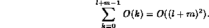

Data Structures and Algorithms
with Object-Oriented Design Patterns in C++
Data Structures and Algorithms
with Object-Oriented Design Patterns in C++
The proof of the correctness of Program  is left as an exercise for the reader (Exercise ).
We discuss here the running time analysis of the algorithm,
as there are some subtle points to remember which
lead to a result that may be surprising.
is left as an exercise for the reader (Exercise ).
We discuss here the running time analysis of the algorithm,
as there are some subtle points to remember which
lead to a result that may be surprising.
Consider the addition of a polynomial p(x) with its arithmetic complement -p(x). Suppose p(x) has n terms. Clearly -p(x) also has n terms. The sum of the polynomials is the zero polynomial. An important characteristic of the zero polynomial is that it has no terms! In this case, exactly n iterations of the main loop are done (lines 7-29). Furthermore, zero iterations of the second and the third loops are required (lines 30-35 and 36-41). Since the result has no terms, there will be no calls to the Insert function. Therefore, the amount of work done in each iteration is a constant. Consequently, the best case running time is O(n).
Consider now the addition of two polynomials, p(x) and q(x), having l and m terms, respectively. Furthermore, suppose that largest exponent in p(x) is less than the smallest exponent in q(x). Consequently, there is no power of x which the two polynomials have in common. In this case, since p(x) has the lower-order terms, exactly l iterations of the main loop (lines 7-29) are done. In each of these iterations, exactly one new term is inserted into the result by calling the Insert function. Since all of the terms of p(x) will be exhausted when the main loop is finished, there will be no iterations of the second loop (lines 30-35). However, there will be exactly m iterations of the third loop (lines 36-41) in each of which one new term is inserted into the result by calling the Insert function.
Altogether, l+m calls to the Insert will be made. It was shown earlier that the running time for the insert function is O(k), where k is the number of items in the sorted list. Consequently, the total running time for the l+m insertions is

Consequently, the worst case running time
for the polynomial addition given in Program
is  , where n=l+m.
This is somewhat disappointing.
The implementation is not optimal because it fails to take account
of the order in which the terms of the result are computed.
I.e., the Insert function repeatedly searches the sorted list
for the correct position at which to insert the next term.
But we know that correct position is at the end!
By replacing in Program
all of the calls to the Insert function by
, where n=l+m.
This is somewhat disappointing.
The implementation is not optimal because it fails to take account
of the order in which the terms of the result are computed.
I.e., the Insert function repeatedly searches the sorted list
for the correct position at which to insert the next term.
But we know that correct position is at the end!
By replacing in Program
all of the calls to the Insert function by
result.linkedList.Append (...);the total running time can be reduced to O(n) from
 Copyright © 1997 by Bruno R. Preiss, P.Eng. All rights reserved.
Copyright © 1997 by Bruno R. Preiss, P.Eng. All rights reserved.